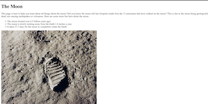
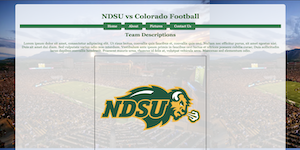
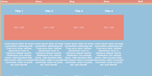
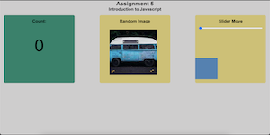
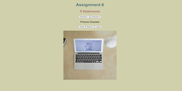
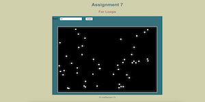
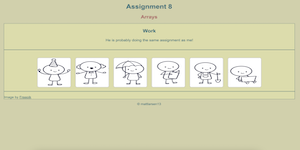
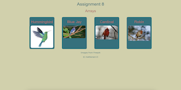

Assignment 1 - Basic HTML
Assignment 1 used basic HTML tools to help describe a task of our own. This used lists, tables, photos, etc to help learn the basic of HTML.
Assignment 2 - Basic CSS
Assignment 2 involved basic CSS as well as HTML to help spruce up the look of our webpage. This helped color the text, background, and made the page look nicer.
Assignment 3 - Page Layout
Assignment 3 takes another step into HTML and CSS to help create a page layout given to students. This used new topics like flexing, borders, padding, etc.
Assignment 4 - Recreate CSS Page
Assignment 4 finalizes skills in HTML and CSS to recreate the graduate school page on the UofSC website. This hones and perfects our skills of intro HTML and CSS.
Assignment 5 - Intro to JavaScript
Assignment 5 focuses on learning the introductories skills to JavaScript. This shows skills such as counter, loading images, and sliders.
Assignment 6 - Conditionals
Assignment 6 goes more into depth focuses on conditionals in JavaScript. Some major new things used were variables, if statements, and more!
Assignment 7 - For Loops
Assignment 7 tackles the challenges of using loops in JavaScript. This showed things such as if statements to verify numbers and for loops to paste a certain amount of stars.
Assignment 8 - Arrays
Assignment 8 explores the use of arrays in Javascript. This helped to use an array of images and find definitions of each image upon clicking it.
Assignment 9 - Classes
Assignment 9 introduces how to use classes in Javascript. This showed me skills such as constructors and creating constants to allow certain actions to happen, as well as a useful tool called modals.